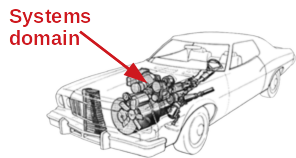

Alain Tchana was born in 1985 in Nkongsamba, Cameroon. He studied there until 2008, where he obtained his master's degree in Networks and Multimedia Applications at the Computer Science Department of the University of Yaoundé I. After his internship at Institut de Recherche en Informatique de Toulouse (IRIT, in France), he started a PhD in the same laboratory under the supervision of Pr Daniel Hagimont. During his thesis, Alain Tchana worked on the design of orchestrators for the cloud. He obtained his PhD in 2011 and joined the Laboratoire d'Informatique de Grenoble (LIG, in France) under the supervision of Pr Noel De Palma. During his post-doctorate at LIG, Alain Tchana was interested in the optimization of benchmarking systems.
In 2013, Alain Tchana was recruited as Associate Professor at Institut National Polytechnique de Toulouse where he joined the SEPIA team of IRIT. He focused his research on the field of operating systems and hypervisors. In 2015, Alain Tchana started a close collaboration with Cameroonian universities and more particularly with the Ecole Nationale Supérieure Polytechnique de Yaoundé (ENSPY) in Cameroon. Since then, he has been a guest lecturer in the Computer Engineering department of ENSPY where he teaches Cloud and Virtualization. Alain Tchana has supervised about twenty students from ENSPY.
After the defense of his Habilitation to Supervise Research in 2017, Alain Tchana was recruited in 2018 at Université Côte d'Azur at the rank of Full Professor. Then in 2019, Alain Tchana was recruited at Ecole Normale Supérieure (ENS) de Lyon in the Laboratoire de l'Informatique pour le Parallélisme (LIP). At ENS de Lyon, Alain Tchana was in charge of a Systems research group composed of about five PhD students. He was also the head of the computer science department, co-chair of the LIP's parity committee, and member of the CNRS national committee. In September 2023), Alain Tchana was recruited at ENSIMAG - Grenoble INP in the ERODS team of the LIG laboratory, where he is co-leader of the Défi INRIA OS.
Alain Tchana's work has been the subject of more than sixty articles published in prestigious international peer-reviewed conferences and journals (e.g., EuroSys, ATC, Infocom, DSN). Alain has served as PC member of several Systems conferences such as EuroSys, NSDI, DSN, ATC, hotOS. One of Alain Tchana's outstanding achievements is his ability to transmit the love of research to his PhD students. Indeed, all of the seven students he supervised are pursuing a research activity. Five of them have permanent positions in academia.
Alain Tchana is mainly interested in the following research topics: datacenter disaggregation, storage virtualization, virtualization of hardware features for virtualization, performance improvement, and securing applications. During his Ph.D. thesis and post-doctorate, his research was in autonomous administration, a sub-field of Middleware. He participated in developing the first orchestrators for the cloud (RoboConf, transferred to Linagora). He has 6 publications in Middleware, the major conference of that domain. Once permanent (in 2013), he oriented his research in Systems, particularly Virtualization and Operating Systems. He is now interested in improving application performance and saving energy. System research domain is at the junction of several research domains. He has 6 publications in EuroSys (a major conference in System), 2 publications in Infocom (major conference in Networks), 2 publications in DSN, 1 publication in RAID (major conferences in Security), 4 publications in Sigmetrics (major conference in Networks and Systems), and publication in SuperComputing (SC, major conference in HPC). His futur research project (see my CV) is pluridisciplinary. It combines Law and Systems to take into account data privacy laws at the operating system level.
Simply, Alain Tchana is a System's guy!

Publications (2021-2022)
Out of Hypervisor (OoH): Efficient Dirty Page Tracking In Userspace Using Hardware Virtualization Features. SC 2022
[ PDF][ Slides]
Stella Bitchebe & Alain Tchana
Odile: A scalable tracing tool for non-rooted and on-device Android phones. RAID 2022.
Alain Tchana, Lavoisier Lavoisier Wapet, Yérom-David Bromberg.
Simulating SIMBox frauds for detection investigation. CoNEXT Student Workshop 2022.
Anne Josiane Kouam, Aline Carneiro Viana, and Alain Tchana.
TGVM: Live Migration of Virtual Machines on Heterogenous Same ISA Processors. (workshop) SPMA 2022, colocated with EuroSys 2022.
Caleb Fonyuy-Asheri, Djob Mvondo, Fred Onanina, Alain Tchana.
Performance and design analysis of GiantVM, a distributed hypervisor. (workshop) SPMA 2022, colocated with EuroSys 2022.
Brice Teguia, Mohamed Karaoui, Alain Tchana.
Montsalvat: Intel SGX Shielding for GraalVM Native Images. Middleware 2021.
Peterson Yuhala, Jämes Ménétrey, Pascal Felber, Valerio Schiavoni, Alain Tchana, Gaël Thomas, Hugo Guiroux, and Jean-Pierre Lozi.
Tell me when you are sleepy and what may wake you up! SoCC 2021 (short paper).
Djob Mvondo, Antonio Barbalace, Alain Tchana, and Gilles Muller.
Data center disaggregation - when and how much? MASCOTS 2021 (short paper).
Thomas Begin, Alexandre Brandwajn, and Alain Tchana.
SIMBox bypass frauds in cellular networks: Strategies, evolution, detection, and future directions. IEEE Communications Surveys and Tutorials 2021.
Josiane Kouam, Aline Carneiro, and Alain Tchana
Mitigating vulnerability windows with hypervisor transplant. EuroSys 2021.
Dinh Ngoc Tu, Boris Teabe, Alain Tchana, Gilles Muller, and Daniel Hagimont
FaaSCache: an opportunistic free caching system for FaaS platforms. EuroSys 2021.
Djob Mvondo, Mathieu Bacou, Kevin Nguetchouang, Lucien Ngale, Stephane Pouget, Josiane Kouam, Renaud Lachaize, Jinho Hwang,
Tim Wood, Daniel Hagimont, Noël De Palma, Batchakui bernabé and Alain Tchana
Extending Intel PML for Hardware-Assisted Working Set Size Estimation of VMs. VEE 2021.
Stella Bitchebe, Djob Mvondo, Alain Tchana, Laurent Réveillère, and Noel De Palma
(No)Compromis: Paging virtualization is not a fatality. VEE 2021.
Boris Teabe, Peterson Yuhala, Alain Tchana, Fabien Hermenier, Daniel Hagimont, and Gilles Muller
Plinius: Secure and Persistent Machine Learning Model Training. DSN 2021.
Peterson Yuhala, Pascal Felber, Valerio Schiavoni, and Alain Tchana
Find out the complete publications list on dblp
Current Ph.D. Students
Direction of Dufy Teguia's thesis
Subject: Techniques avancées pour la spécialisation de fonctions réseaux conteneurisées.
Period: Mar. 2023 - Mar. 2026
Funding: CIFRE (Orange Labs)
Supervision: Alain Tchana 50% (co-director)
Kahina Lazri 50% (co-sueprvisor)
Direction of Assane Fall's thesis
Subject: Hoisting Linux Memory manager to userspace.
Period: Oct. 2022 - Oct. 2025
Funding: Defi INRIA
Supervision: Alain Tchana 50% (co-director)
JP Lozi 50% (co-supervisor)
Direction of Theophile Dubuc's thesis
Subject: Efficient storage virtualization.
Period: Nov. 2021 - Nov. 2024
Funding: CIFRE (with Outscale)
Supervision: Alain Tchana 50% (co-director)
Pierre Olivier 50% (co-director)
Direction of Kevin Nguetchouang's thesis
Subject: Efficient storage virtualization.
Period: Dec. 2020 - Dec. 2023
Funding: Labex MiLyon
Supervision: Alain Tchana 50% (co-director)
Pierre Olivier 50% (co-director)
Direction of Josiane Kouam's thesis
Subject: Simbox fraud mitigation.
Period: Nov. 2019 - May 2023
Funding: INRIA CORDI-S
Supervision: Alain Tchana 50% (co-director)
Aline Carneiro 50% (co-director)
Former Ph.D. Students
Direction of Stella Bitchebe's thesis
Subject: Out-of-Hypervisor (OoH): When Nested Virtualization Becomes Practical.
Period: Mar. 2019 - Feb. 2023
Funding: ANR Scalevisor
Currently: Post-Doc at McGuill (Canada)
Supervision: Alain Tchana 100%
Direction of Lavoisier Wapet's thesis
Subject: Performance and resource management in nested virtualization systems.
Period: Fev. 2017 - Mai 2020
Funding: MESR
Currently: Post-Doc LIRIS (Lyon)
Supervision: Alain Tchana 50% (co-director)
Daniel Hagimont 50% (co-director)
Direction of Djob Mvondo's thesis
Subject: Privileged VM management in virtualized systems.
Period: Feb. 2018 - Dec. 2020
Funding: FEDER
Distinction: Younger african Ph.D. Doctor (22 years old), and GDR RSD and ASF best thesis award
Currently: Associate Professor University of Rennes (France)
Supervision: Alain Tchana 50% (co-director)
Noel De Palma 50% (co-director)
Direction of Bao Bui's thesis
Subject: NUMA management in virtualized systems.
Period: Oct. 2017 - Oct. 2020
Funding: Scholarship 911 Vietnam
Currently: Lecturer at Can Tho University
Supervision: Alain Tchana 50% (co-director)
Daniel Hagimont 50% (co-director)
Direction of Mathieu Bacou's thesis
Subject: Performance and resource management in nested virtualization systems.
Period: Feb. 2017 - May 2020
Funding: CIFRE Atos
Currently: Maître de Conférences
Supervision: Alain Tchana 50% (co-director)
Daniel Hagimont 50% (co-director)
Direction of Grégoire Todeschi's thesis
Subject: Memory overcommitment in virtualized systems.
Period: Oct. 2016 - June 2020
Funding: MESR
Currently: Industry
Supervision: Alain Tchana 50% (co-director)
Daniel Hagimont 50% (co-director)
Direction of Vlad Nitu's thesis
Subject: Memory management in virtualized systems.
Period: Oct. 2015 - Oct. 2018
Funding: MESR
Distinction: GDR RSD and ASF best thesis award (2nd place)
Currently: CR CNRS
Supervision: Alain Tchana 50% (co-director)
Daniel Hagimont 50% (co-director)
Direction of Boris Teabe's thesis
Subject: Performance optimization in virtualized systems.
Period: Oct. 2014 - Oct. 2017
Funding: INRIA CORDI-S
Distinction: GDR RSD and ASF best thesis award (1rst place) et Leopold Escande award
Currently: Maître de Conférences
Supervision: Alain Tchana 50% (co-director)
Daniel Hagimont 50% (co-director)
This teaching focuses on operating systems and systems programming.
This teaching focuses on the internal architecture of operating systems: how the process, memory, file system, networks, etc. are virtualised. I also present hardware solutions that facilitate virtualisation.
This teaching focuses on the internal architecture of operating systems (process, memory, file system, IPC, Syscalls, etc.). I describe how its basic services are implemented (concepts, abstractions, mechanisms and policies), how they interact with each other, with hardware and applications.
I introduce the basic concepts of the network (IP address, OSI layers, protocol, services, etc.). This course has been introduced temporarily (as part of the Architecture course) in L3 which does not yet have a Network course. A whole course unit will be dedicated to the latter in L3 from September 2021 as part of the computing training reform that I am currently leading at ENS Lyon.
This course deals with the basic notions of computing: the hardware part of a computer (processor, memory, disk, network card), the software part of a computer (operating system, server application), networks, the Internet, installation of an operating system, etc.
This course deals with IT tools for collaborative work. I introduced the platforms: Slack, Trello, AppearIn, Zed (secure communication).
This subject deals with computer technologies useful for decision support, for an audience of non-computer specialists. I have taught the use of the Microsoft Office suite (Access database, creation of forms, reports, graphs, VBA programming, and SQL).
This course deals with the following concepts: processing XML documents by programming, implementation of compilers (notion of grammar, lexical analysis, syntactic analysis and semantic analysis), UML modeling, some design patterns (MVC, visitor and decorator), unit tests and introspection.
This course focuses on the infrastructure aspect of big data. To this end, the following notions are addressed: motivation of the bigdata, positioning with traditional data processing (limits of old technologies), the definition of the bigdata, presentation of its disciplines (visualization, analysis, platform, systems, hardware), focus on infrastructure-related disciplines (platform, systems, and hardware), presentation of the two main modes of processing of data (batch processing and streaming processing), presentation of approaches to solving these problems, presentation of the corresponding bigdata platforms.
This course covers all the basics related to Cloud Computing: principles of the cloud, benefits of the cloud for users and providers, models of the cloud, challenges of the cloud, the most famous public clouds, management systems of a private cloud, virtualisation and its role in the cloud, consolidation of virtual machines, containers, and legal aspects of the cloud.
This course introduces technologies that ease the programming of web applications, namely: the MVC (Model View Controler) design pattern, ORM (Object Relational Mapping), AngularJS, Bootstrap, JQuery, JEE, Django, and relational databases. This teaching is accompanied by a project consisting in developing a realistic web application.
This course covers the following concepts: distributed programming using sockets, RMI or JMS, and programming the integration of legacy applications using Enterprise Service Bus (ESB) technology. This teaching is generally completed with a project carried out in groups of 4.
The concepts addressed in this course are of two types: internal constitution of an operating system (scheduler, memory manager, etc.), and use of an operating system (shell, system programming, etc.). The Linux operating system is used as a basis for work. This teaching is supplemented by a fil rouge project carried out by each student.
The last decade has seen the rapid digitalization of our societies (health, politics, transport, and so on), resulting in the appearance of a large diversity of applications and hardware that the operating system (OS) must consider. In addition, new critical concerns have emerged such as data privacy and carbon emission. Consequently, the OS (Linux, FreeBSD, macOS, and Windows), which is at the heart of the machine, includes general-purpose sub-optimal policies (memory management, process scheduling). Their customization is arduous, not within reach of system integrators, and requires machine reboot (thus causing unavailability). The fundamental problem of popular OSes is their monolithic nature, which enforces packaging all OS services in a single binary that runs in the privileged mode of the CPU (kernel space), where customization is intricate.
Mutant resurrects microkernels, which advocates uncoupling OS services and running all of them in the unprivileged mode of the CPU (userspace), where quick customization is conceivable. Given an existing monolithic OS, Mutant mutates it into another one (called fluid OS) whose services can be specialized by integrators to meet a specific setup for achieving optimal performance, energy consumption, and privacy.
Mutant should answer four questions:
Q1: Designing. How to redesign a monolithic OS without sacrificing maintainability? Based on Linux and instrumentation, we will identify and instrument all OS functions that will allow service explode and outsourcing into userspace.
Q2: Abstracting. Which abstraction suits userspace OS services as Process and Thread are respectively strongly and weakly isolated. We will invent the appropriate first-class concepts using hardware and software co-design.
Q3: Characterizing. What should be the language support provided to integrators? We will characterize existing high-level languages and we will create Domain Specific Languages.
Q4: Verifying. How to keep the resulting OS as safe as the original one? We will verify all our OS extensions, userspace libraries, and communication protocols using verification tools and techniques.
To show the effectiveness of Mutant, I will study several use cases, targeting energy consumption, performance, and privacy goals. Concerning the latter for instance, I will design a GDPR compliant file system services so that all applications could take benefit from it. By considering GDPR at the OS-level, my approach prevents application developpers and companies to deal with the law. I will conduct this pluridisciplinary work in collaboration with law researchers. We have published on arXiv a vision paper.
OoH is a new virtualization research axis advocating the exposure of individually current hypervisor-oriented hardware virtualization features to virtual machines (instead of trying to virtulize full hardware inside VMs). This way VM’s processes can also benefit from those features. We first leveraged OoH to improve checkpoint/restore, garbage collectors, and buffer overflow detection systems. We are now seeking to implement OoH in bare-metal.
Data transfering among datacenters.
Distributed virtual machines.
Fault tolerance in disaggregated environments.
Distributed hypervisors.
Malicious mobile App detection.
Memory distribution within a rack.
How to choose your cloud.
Memory disaggregation.
May 2022, Lyon
April 2021, Rennes
November 2020, Lyon
October 2019, Nice
July 2018, Toulouse
2015, 2016 & 2017, Cameroon
December 2015, Vancouver, Canada
Responsibilities
Medias, Awards, and Distinctions
46 Allée d'Italie
ENS Site Monod
69007 Lyon
alain.tchana@ens-lyon.fr